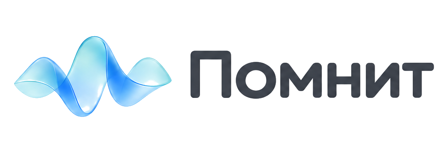
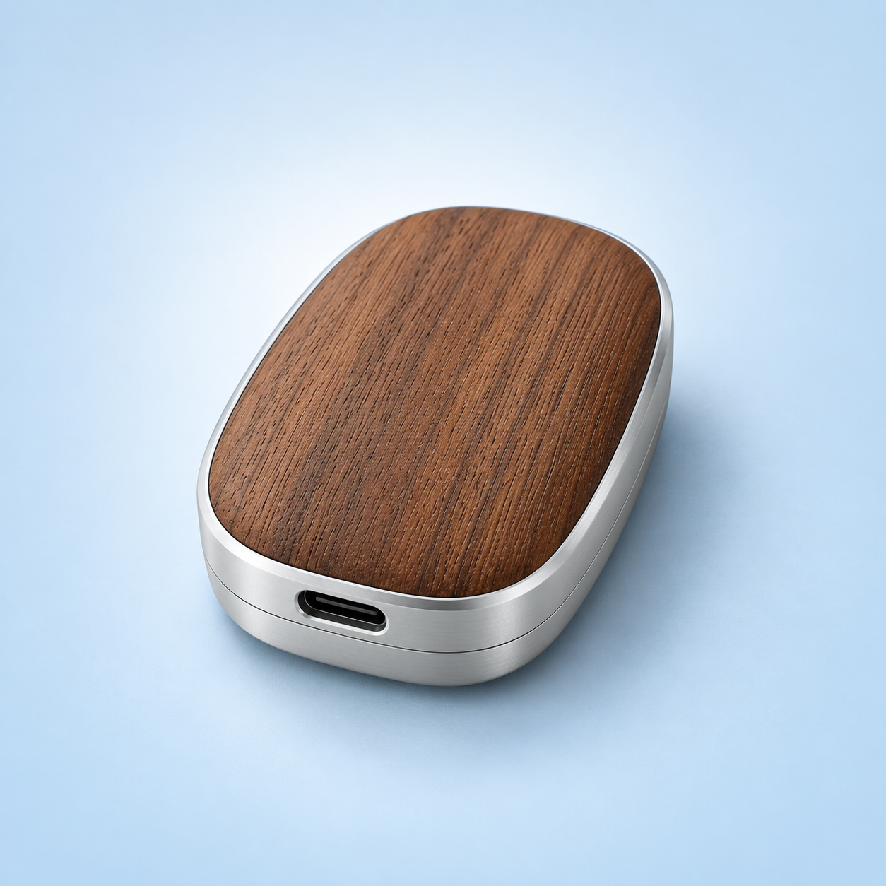
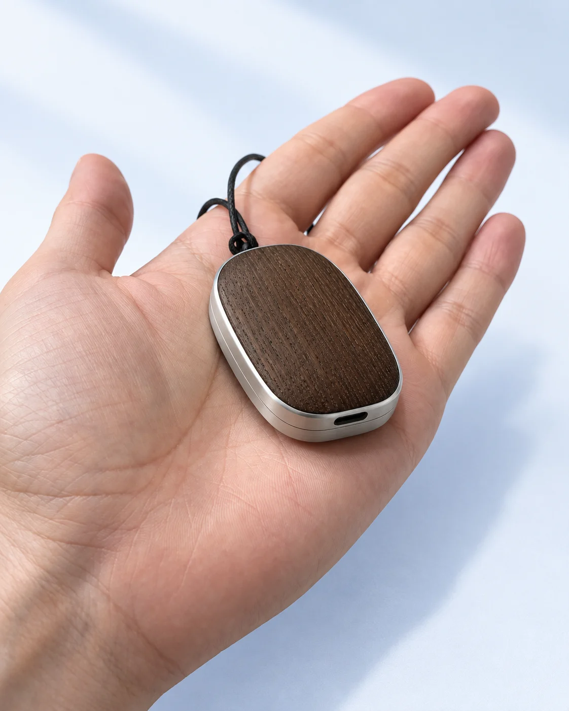
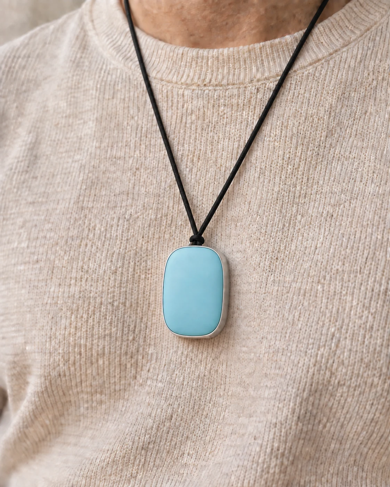

Итог встречи Решили
Собрать первую партию
к пятнице.
Готовый итог встречи
Коротко: что обсудили, что решили, какие суммы и сроки назвали.

Ваша вторая память
Приложение и кулон, которые превращают разговоры в понятные дела, а прожитые дни — в личную историю.


Кулон в жизни
Небольшой корпус из дерева и алюминия помещается в ладони и спокойно носится на шнурке.
работы без подзарядки
записи без выгрузки на телефон
Что вы получаете
Собрать первую партию
к пятнице.
Коротко: что обсудили, что решили, какие суммы и сроки назвали.
Помнит сохраняет ваши обещания и обещания других. Показывает это как понятные дела.
«Теперь это хочетсяВ истории этого дня
не прятать, а носить».
Рабочие договорённости становятся делами, а личные разговоры — историей жизни.
Два пространства
На работе — решения, обещания и сроки. В личной жизни — люди, события и слова, к которым хочется вернуться.
Задачи первого этапа, бюджет и сроки.
Отправить смету до пятницы. Клиент уточнит объём заказа к четвергу.
Принцип внедрения: компания получает только рабочую информацию, которую ей разрешили видеть. Личная часть памяти сотрудника остаётся личной.
События, мысли, встречи и живые фразы собираются в рассказ о прожитом дне.
Помнит сохраняет историю людей: что вас связывает и как менялись ваши отношения со временем.
Страницы летописи можно слушать как главы книги — голосом рассказчика, которого выберет владелец.
После работы заехали к друзьям. Сначала говорили о планах на осень, потом достали старые фотографии и неожиданно засиделись допоздна. Запомнился не повод, а ощущение, что все наконец рядом.
«Давай чаще собираться
просто так».
Стиль тоже выбираете вы: короткий дневник, строгие мемуары, ироничная проза или собственная манера рассказа.
Один день с Помнит
Что сделать сегодня и о чём пора напомнить другим.
Что решили, кто за что отвечает и к какому сроку.
Финальный корпус и план тестирования.
Собрать первую партию к пятнице.
О чём договорились раньше и что осталось обсудить.
Каким был этот день и какие слова хочется сохранить.
Долго гуляли, обсуждали планы и никуда не спешили. Обычный вечер, который хочется запомнить.
«Давай чаще собираться
просто так».
Для кого
Руководителям, предпринимателям, специалистам и командам — чтобы не терять договорённости. И каждому человеку — чтобы не терять собственную историю.
Я обещал ему скидку или нет?
Помнит покажет точную фразу и дату разговора. Не нужно искать по заметкам и надеяться на память.
Как это работает
Включаете запись на телефоне или носите кулон.
Помнит делает короткий конспект и список дел.
Разговоры связываются с людьми, решениями и обещаниями.
Получаете короткий ответ по прошлым разговорам.
Для ответа используются только относящиеся к вопросу разговоры — не весь личный архив.
Попробуйте сами
Лента, дела, разговор с памятью и летопись. Выберите раздел прямо в телефоне.
01 / Лента разговоров
Лента собирает разговоры по дням. Откройте встречу с Мариной — увидите суть, решения, обещания и следующий шаг.
Сотрудник помнит договорённости, а команда сохраняет историю клиентов и проектов.
Откройте «Посмотреть итог» в карточке встречи.
02 / Дела и обещания
Ваши обещания и то, что обещали вам, собираются в понятный список — со сроком и контекстом.
Договорённости из встреч становятся делами. Их можно передавать в рабочие системы компании.
Отметьте любое дело выполненным.
03 / Вопрос к памяти
Перед следующим разговором Помнит возвращает нужный контекст: кому вы что обещали и о чём договорились.
Спросите про Марину или Олега — ответ назовёт договорённость и срок.
Выберите пример вопроса под полем ввода.
04 / Личная летопись
В конце дня события и живые фразы складываются в небольшой рассказ, к которому можно вернуться по дате.
Прочитайте страницу дня или послушайте её как главу аудиокниги жизни.
Нажмите на 12 или 15 сентября — история изменится.
Кулон
Небольшой кулон помогает сохранить важное, пока вы живёте своим днём. Попробуйте разные сочетания под настроение.

Соберите свой вариант
Настраивается под вас
Короткий дневник, строгие мемуары или лёгкий рассказ — как вам приятнее читать.
Передавать записи сразу, раз в час или только по вашей команде.
Вы сами выбираете слово, на которое будет откликаться ваш помощник.
Настройте срок хранения и то, какую информацию Помнит может использовать.
Главный принцип
Не весь архив сразу. Для ответа берутся только нужные разговоры.
Ответ можно проверить. Помнит показывает исходный разговор и дату.
Вы управляете памятью. Сами выбираете, что хранить и когда удалять.
Помнит